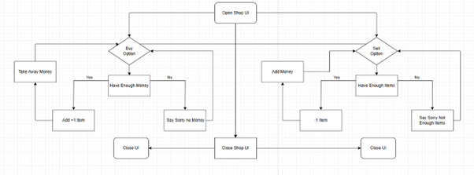
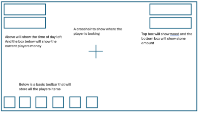

Farm Game
This game was designed to be a simple farming game where players can farm and build their own houses the player then also has to pay rent to an npc known as jeff above is a video demonstration of some of the mechanics the game has.
- 
to the right is a flow chart diagram of a shop capital farms shop system and a basic system that describes the path of selling items and buying items, the player can open up the menu and they can chose to sell or buy and item which then checks the item amount or balance depending on which option is chosen then adds or subtracts the chosen value
- 
this is a basic design of a simple hud that will show the player their stats when they are playing the game so they can choose their items and see how much money/time they have left
All 3D Assets currently used in this project where designed and imported by myself using a program called magicaVoxel, I used this program because I liked the idea of a voxel based game and would be able to have all the assets I needed and they would all have matching styles to improve the look of the game and the fell of it